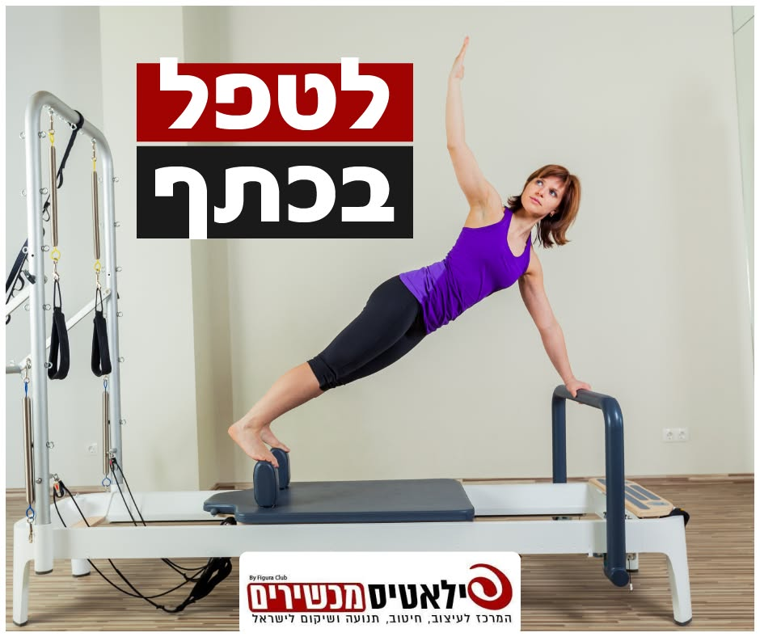

כתף קפואה: איך מזיזים את היד בלי להחמיר את הכאב

את מנסה לסגור את החזייה מאחור, והיד לא מגיעה.
להוריד צלחת מהמדף העליון - כבר קשה.
ובלילה את מתעוררת, כי שכבת על הצד הזה.
ומה רוב האנשים עושים?
או שמפסיקים להזיז את היד, כדי "לא להחמיר".
או שמותחים אותה בכוח, דרך כאב חזק, כדי "לשחרר".
שתי הדרכים מחמירות.
בלי תנועה - הכתף מתקשחת עוד יותר.
ומתיחה בכוח בשלב הכואב - מגבירה את הכאב ואת הנוקשות.
למה זה קורה
מסביב למפרק הכתף יש קופסית - מעטפת של רקמה שעוטפת את המפרק.
בכתף קפואה היא מתדלקת, מתעבה ומתכווצת.
נשאר פחות מקום לתנועה, וכל ניסיון להרים את היד כואב.
זה עובר בשלבים: קודם בעיקר כאב, אחר כך בעיקר נוקשות, ואז הכתף משתחררת לאט.
זה שכיח יותר בגילאי 40 עד 60, ואצל אנשים עם סוכרת.
ולפעמים זה מתחיל אחרי תקופה שהיד הייתה מקובעת - אחרי ניתוח או שבר.
מה המחקרים אומרים
- תנועה בתוך גבולות הכאב עדיפה על מתיחות בכוח. במחקר שעקב שנתיים אחרי 77 מטופלים, 89% מאלה שהתאמנו בלי לעבור את סף הכאב חזרו לתפקוד תקין או כמעט תקין - לעומת 63% בקבוצת המתיחות האינטנסיביות.
- ההנחיה של שירות הבריאות הבריטי: לא להפסיק לזוז, אבל להימנע מתנועות שמכאיבות ולהזיז את הכתף בעדינות.
- ברוב המקרים הכתף משתחררת עם הזמן, לרוב תוך כשנתיים. המטרה של התרגול היא לעבור את התקופה הזו עם פחות כאב ויותר תנועה.
שלושה תרגילים עדינים להתחלה
כל תרגיל - לאט, עם נשימה. אם הכאב מתגבר - עוצרים.
1. מטוטלת
עומדת ליד שולחן, נשענת עליו עם היד הבריאה.
מתכופפת מעט קדימה. היד הכואבת תלויה למטה, רפויה.
מניחה לה להתנדנד בעדינות - קדימה ואחורה, מצד לצד, ובעיגולים קטנים.
10 פעמים לכל כיוון.
2. החלקה על השולחן
יושבת מול שולחן, האמות על מגבת, אגודלים למעלה.
מחליקה את הידיים קדימה לאט, עד מתיחה קלה בכתף.
חוזרת לאט להתחלה.
5 עד 10 פעמים.
3. הליכת אצבעות על הקיר
עומדת מול קיר, קצת פחות ממרחק יד ישרה.
נוגעת בקיר בגובה המותניים עם קצות האצבעות, מרפק מעט כפוף.
מטפסת עם האצבעות למעלה, לאט, רק עד כמה שנוח.
מורידה את היד לאט - אפשר בעזרת היד השנייה.
10 פעמים.
מתי הולכים קודם לרופא
לפני שמתחילים להתאמן - אם יש לך אחד מאלה:
- כאב אחרי נפילה או מכה, או כתף שנראית שונה מהרגיל
- פתאום את לא מצליחה להרים את היד
- חום, או כתף אדומה וחמה למגע
- נימול או עקצוצים ביד שלא עוברים
- כאב בחזה שמקרין ליד, לצוואר או ללסת - זה מצב חירום, מתקשרים מיד ל-101
מה עושים בסטודיו
בסטודיו אני עובדת על התנועה של הכתף - על הרפורמר ועל כסאות WONDA, בעומס הדרגתי, בקבוצות קטנות.
כל תרגיל מותאם לשלב שהכתף שלך נמצאת בו, ואני יודעת מתי לעצור ומתי להתקדם.
אם את מזהה את עצמך בזה, השאירי פרטים ונחזור אלייך בהקדם 👇